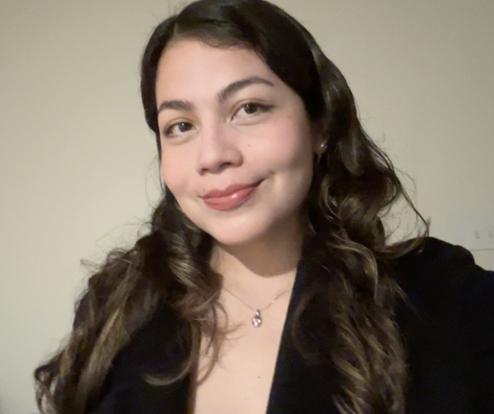

I am a first-year Ph.D. student in Informatics at the ProHealth Lab at Indiana University, advised by Patrick Shih. My research focuses on (contextual) speech recognition systems for atypical speech in clinical and assistive contexts. I graduated from a BA in Computer Science at Berea College in 2024 where I was advised by Dr Jasmine Jones
Maria Belen Saavedra Rios, Youngsoon Takei, Blade Hicks, Lydia Stamato, Wei Wu, and Jasmine Jones. 2025. "Seems Complicated and Unachievable": A Collaborative Autoethnography of Design Replication in Undergraduate Research. In Proceedings of the 7th Annual Symposium on HCI Education (EduCHI '25). Association for Computing Machinery, New York, NY, USA, Article 4, 1–11. https://doi.org/10.1145/3742901.3742911